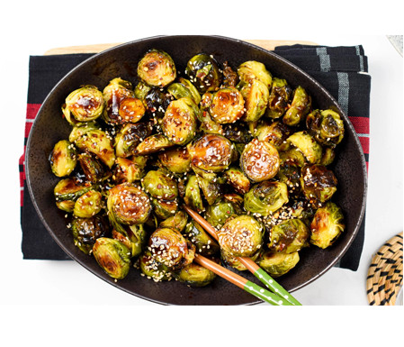

brusclebrouts

make a fine side dish no one cooks it right
you will need:
buccle sproughts(chop into 1/2s langthways)
old bay
cooking oil
pan and lid
to cook
grees pan
put buccle sproughts in a medim heat
add a unholy amount of old bay(marylanders add a git bit)
cook with lid for ten min untill brown and crispy
filp till done
go home